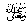
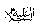
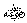
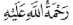
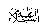

The Malaaikah Coming Down
Anasreports that Rasulullahsaid: “On Laylatul Qadr, Jibraeel
comes down to earth with a group of Malaaikah, making dua
for blessings for every servant of Allah
whom they see in worship, standing or sitting and engaged in
Allah’spraise. Then, on the day of Eid, Allahboasts about them to the Malaaikah: ‘O My Malaaikah, what is the reward of that worker who had done his job very well?’
They reply: ‘O Allah! his reward should be given to him in full.’ To
this Allahreplies, ‘O My Malaaikah, My servants, the males as well as the females, have today done their
duty, thereafter they went to the place of Eid Salaah (Eidgah) raising their voices in dua
to Me. I swear by My Honour, by My Greatness, by My Grace and by My High
Position, that I shall surely answer the dua’s of these people.’ Thereafter, Allahaddresses the people: ‘Go, I have forgiven your sins and have replaced
your evil actions with good
ones.’ These people then return from the place of Eid Salaah
in such a condition that their sins are forgiven.”
Note: In this Hadeeth, it is clearly stated that Jibraeel
comes down with the Malaaikah. Another Hadeeth
reported by Ibn Abbas
and quoted by Abdul Qaadir Jilaani
in his book Ghunyah, further explains this Hadeeth.
It is reported that Jibraeel
, after coming down, commands the Malaaikah
to go to the house of everyone busy with worship of Allah
and greet him by shaking his hands. Then the Malaaikah
spread out, visiting every house, whether large or small, whether in the
jungle or on a ship, wherever a believer lives, to shake his hands.
However, certain houses are not entered; the house where a dog or pig is
found, the house where there is someone who has committed adultery (zina)
and is still unclean because he has not even taken a bath and the house
where pictures (photos) of men and animals are displayed.
How sad it is that Muslim houses should lose the blessed visit of the Malaaikah
only because there are pictures of men and animals being displayed for
the sake of decoration. A single picture may have been hung by just one
person of the house, as a result of which all the other people in the
house are deprived of blessings.